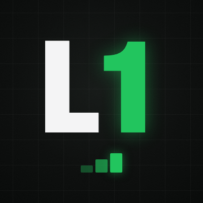

Two sibling curation brands. One question each: does level one earn level two, and does page one earn page two?
We are starting two recommendation accounts, not two advertising accounts. Level One plays the first level of somebody else's new game and says whether it earned the second. Page One reads the first page of somebody else's new book and says whether it earned the second. Four out of every five features are other people's work. That ratio is not modesty, it is the entire mechanism: an account that only sells its own thing has no audience, and an account that hands people something good every week builds one.
Everything in this document already exists as a file. The brand kit is built, both week-one queues are written and fact-checked, and the message to Wyatt's dad is drafted and ready to send. Nothing here has been posted, and no creator has been contacted.
| § 01–02 | Why the format is shaped this way, and the five rules nobody breaks. |
| § 03–04 | The two brands: identity, voice, and the post template each one repeats. |
| § 05–06 | Launch mechanics. Account setup, the anti-bot sequence, follow lists, first post. |
| § 07–08 | Week one, fully written. Nine cards per brand, paste-ready, sources recorded. |
| § 09 | The Page One dependency: the intake message for Wyatt's dad. |
| § 10–11 | What we found the hard way, what has a deadline, and who owns the next move. |
1. The two X signups. Phone verification cannot be automated and account creation is a human action under X's terms. Everything needed is in § 05, paste-ready. Deadline: do the Level One signup by roughly 4 August — the Day 2 Kickstarter card expires 6 August.
2. The text to dad. Page One's scope is locked to his genre on purpose, and we do not know his genre yet. The message is written verbatim in § 09 and takes one minute to send.
The instinct with a new game or a new book is to build an account that talks about it. That account does not grow, because nobody follows a commercial. The alternative is to build something with genuine editorial value, earn an audience with it, and let our own work arrive to people who already trust the taste. It is the long way around and it is the only way that works.
Every feature is designed to fire a four-step loop. This is the whole engine, and it is why tagging the creator is a rule rather than a courtesy.
Of the nine authors queued for Page One week one, exactly two have an X handle discoverable from their own website. The other seven list Instagram only, or no socials at all. On the games side effectively every developer has an X account linked from their own Steam page. So the loop fires on roughly 2 of 7 book posts versus close to 7 of 7 game posts. This is the single most important structural finding in the work so far. It means Instagram cross-posting is not optional garnish for Page One, it is where the amplifier actually lives, and it makes the Bluesky mirror far more valuable for books than for games. See § 10.
A working novelist reading first pages and a working game designer playing first levels is not two accounts that happen to share a template. It is one idea with two rooms. Each account credibly says the thing that recommendation accounts almost never credibly say: I do this for a living, so I know what a good opening costs. Each also cross-refers to the other in its bio, so a follower of one meets the other.
It does not produce a thousand Kickstarter backers on its own inside a month. Email converts at roughly five percent and Kickstarter followers at fifteen to twenty-five. What it does is compound: it builds an owned audience that is warm before a campaign starts, and it warms the exact tabletop-backer audience by including tabletop Kickstarters in Level One's scope. The honest framing is that this is the marketing leg of the plan, and it pays off across campaigns rather than inside one.
One of: at least 1,500 followers, or one video past 50,000 views, or 250 newsletter subscribers. Hit it and we double down. Miss it and we change the format, not the goal.
These apply to both brands and they are not negotiable. Every one of them exists because breaking it kills the thing that makes the account worth following.
No em dashes, anywhere in post copy. Regular hyphens if a dash is needed at all. Every file in this package has been checked programmatically for this. It is the fastest tell that copy was machine-written.
No hashtag piles. Zero or one, and only when it genuinely helps.

Avatar, 400 × 400.
Banner, 1500 × 500.
Both in /brand/assets/
A game designer who ships his own games, playing everyone else's first level with real curiosity. Sounds like a sharp friend at a demo night: quick verdict, specific reason, zero snark. Excited when something is good, silent when it is not. Never corporate, never a hype machine, never a critic with a rubric.
The only question that matters: does level one earn level two?
LEVEL ONE, no. 14 [Game] by @[dev] Verdict: the grappling hook alone is worth the install. For fans of: [comp]. Out now on [platforms]. (30s clip or screenshot attached)
Numbered like issues so the feed reads as a running series. The verdict names the exact thing that earned level two: a mechanic, a feel, a moment. Not adjectives.
Level One covers indie, mobile and tabletop, including live Kickstarter campaigns. That is not scope creep. It warms the precise audience that a Boo! campaign needs, months before that campaign opens, and it does so by being useful to them rather than by asking them for anything.
Avatar, 400 × 400.
Banner, 1500 × 500.
Both in /brand/assets/
A working novelist reading everyone else's first pages the way he has read his own for years: closely, hopefully, out of love for the craft. Sounds like a well-read friend handing you a book already open: warm, precise, a little wry, allergic to blurb-speak. Never academic, never gushing, never cruel.
The only question that matters: does page one earn page two?
PAGE ONE, no. 6 [Book] by [author] First line: "[quote]" Verdict: earns page two before the paragraph ends. For readers of: [comp]. (cover attached)
The first-line quote is the hook. The verdict says what the prose actually did, not how it made us feel in general.
Every quoted first line must be read in a real, publisher-authorised sample of the actual book. Not from memory, not reconstructed, not paraphrased, and not lifted from a third-party excerpt page without checking. This rule applies to dad's book exactly as strictly as it applies to a stranger's. If there is no public sample of his opening, his card gets premise-based copy that says so.
Roughly ten minutes per account. Do the two signups on different days, or at the very least several hours apart, from the same home network you will normally post from. Both follow lists below were verified live on 31 July 2026.
| Display name | Level One |
| Handle, 1st choice | @LevelOnePlays |
| Handle backups | @LevelOneDaily, then @PlaysLevelOne |
| Sign up with email | wyatt+levelone@corkscrewgames.com |
| Password manager | Save the entry "X - Level One" before closing the tab |
| Avatar / banner | levelone-avatar.png / levelone-banner.png |
| Location | Florida, or leave blank |
| Website field | Leave blank (X only for now) |
Plus-addressing means all X mail lands in the normal inbox with zero admin. A real levelone@ alias can be added in Workspace later without touching the account.
We play level one of a new game and tell you if it earns level two. Indie, mobile, tabletop. Run by a game designer who ships. Sister account: @PageOneReads
If Page One does not exist yet, paste the bio anyway. The handle link goes live when the sibling account is created.
| Display name | Page One |
| Handle, 1st choice | @PageOneReads |
| Handle backups | @PageOneDaily, then @ReadsPageOne |
| Sign up with email | wyatt+pageone@corkscrewgames.com |
| Password manager | Save the entry "X - Page One" before closing the tab |
| Avatar / banner | pageone-avatar.png / pageone-banner.png |
| Location | Florida, or leave blank |
| Website field | Leave blank (X only for now) |
A working novelist reads page one of a new book and tells you if it earns page two. New releases, one verdict at a time. Sister account: @LevelOnePlays
Run this in order on each account. A brand-new account that follows a pile of people and immediately posts a link is the exact shape of a spam bot, and X treats it accordingly.
Optional on both: X Premium at roughly $8/month buys reply visibility, which matters more than usual for a curation account. Works fine without it.
| Handle | What it is | Why follow on day one |
|---|---|---|
| @_wholesomegames | Cozy indie curator | Model curator; Wholesome Direct feeds cozy first-level picks |
| @gameralphabeta | Demo and beta curator | Daily source of brand-new playable indie demos |
| @clemmygames | Indie showcase channel | Runs 2026 indie showcases; constant discovery pipeline |
| @rockpapershot | Rock Paper Shotgun | Indie-friendly PC coverage to track and share |
| @PocketGamer | Mobile games site | Core mobile press; weekly new-game roundups |
| @Polygon | Games and culture outlet | Covers indies plus Gen Con tabletop news |
| @gamedevdotcom | Game Developer | Dev-side news and postmortems worth quoting |
| @GIBiz | GamesIndustry.biz | Industry and funding context for curation |
| @itchio | Indie marketplace | First-level demos and jams launch here daily |
| @Kickstarter | Crowdfunding platform | Where the tabletop campaigns we feature live |
| @dayofthedevs | Indie showcase nonprofit | Premier indie showcases |
| @IndieCade | Independent games festival | Digital plus physical indie coverage |
| @BoardGameGeek | Board game database | Tabletop hub; awards and Gen Con coverage |
| @TabletopMag | Tabletop Gaming Magazine | Active tabletop press replacing dormant Dicebreaker |
| @gamefound | Tabletop crowdfunding | Hosts top board game campaigns |
| @BackerKit | Crowdfunding platform | Big tabletop and zine campaigns launch here |
| @CMONGames | Miniatures publisher | Kickstarter powerhouse; SPIEL Essen 2026 plans |
TouchArcade (site shut down 2024), GameDiscoverCo (moved to Bluesky), Dicebreaker (mothballed), Stonemaier Games (dropped X), BoardGameWire (moved to Bluesky), the IGF news account (dormant), The Dice Tower (dropped X).
| Handle | What it is | Why follow on day one |
|---|---|---|
| @goodreads | Reader reviews platform | Reader taste signals and new-release buzz at scale |
| @BookBub | Deals and recommendations | Cross-genre discovery trends |
| @thestorygraph | Reading tracker | Fast-growing community with fresh discovery data |
| @LibraryThing | Book cataloguing community | Veteran community and early reviewer programmes |
| @PublishersWkly | Publishers Weekly | Core industry news and prepub review pipeline |
| @KirkusReviews | Prepublication reviews | Prepub verdicts to compare against first-page reads |
| @thebookseller | UK publishing trade | UK deals ahead of US coverage |
| @ShelfAwareness | Bookselling news | Daily new-title and bookstore digest |
| @pubperspectives | Publishing Perspectives | Global rights and market context |
| @LondonBookFair | Publishing trade fair | Season calendar and rights buzz |
| @WritersDigest | Craft magazine | Craft content and large writer-audience overlap |
| @thecreativepenn | Joanna Penn | Indie publishing trends from a working novelist |
| @ReedsyHQ | Author services hub | Author community events and how-tos |
| @awpwriter | AWP | Literary community, conference and prize news |
| @parisreview | The Paris Review | Craft interviews pair well with first-page verdicts |
| @TheTLS | Times Literary Supplement | Serious review culture and prize coverage |
| @LAReviewofBooks | LA Review of Books | Coverage beyond New York |
Literary Hub (Bluesky only), Book Riot (dropped X), Electric Literature (announced exit), Authors Guild (left X 2025), Jane Friedman (dropped X), NYT Books (inactive), NetGalley (silent since early 2025), The Millions (dormant), NPR Books (NPR quit X), NaNoWriMo (organisation shut down 2025).
That ten-name dead list on the books side is itself evidence for the finding in § 01: the literary world has substantially left X.
The pinned post is the first post. It goes up after the three-to-four hour wait, then gets pinned. No links in it. This is the one post in the entire system allowed to stand without an image.
New games. We play level one. If it earns level two, we tell you exactly why. If it does not, we say nothing at all. Run by a game designer who ships his own. Expect indie, mobile, and tabletop finds, with a clip every time. Send us your game.
We play level one of new games. Earn level two and the timeline hears about it. Fail and nothing happens. No reviews, no dunks, just finds.
From a game designer who ships. Send us your game.
I make games for a living, and I still love the first ten minutes of someone else's more than anything. So: I play level one of a new game, and if it earns level two, I show you.
Devs, send me your level one.
New books. We read page one. If it earns page two, we tell you exactly why. If it does not, we say nothing at all. Run by a working novelist who has spent a lifetime on first pages. Every verdict is earned on the page. Authors, send us your page one.
We read page one of new books. Earn page two and the timeline hears about it. Fail and nothing happens. No takedowns, just finds.
From a working novelist. Send us your page one.
I am a novelist. I have rewritten my own first pages more times than I can count, so I know what a good one costs. Now I read everyone else's: one new book, one page, one verdict.
If it earns page two, you will hear about it.
Check before posting any of these: no links in the first post, image optional on this one only, and never edit in an em dash.
Nine cards: seven days plus two spares. Every factual claim — title spelling, developer name, platform, release date, Kickstarter funding state — was verified against the listed primary source on 31 July 2026, live, not from memory.
Copy the post block as-is, attach the image, post. Every post is budgeted to fit X's 280-character free-account limit with the link counting 23 characters and the verdict running up to about 120. The "no. N" counter numbers features in posting order; if a spare replaces a day, it inherits that day's number.
Verdict slots are deliberately blank on the games we can play. Wyatt writes the verdict after ten real minutes in the game. The Kickstarter cards carry premise-based verdicts instead, written honestly as reactions to a pitch. No card claims we played anything.
| Day | Game | Developer | Slot logic |
|---|---|---|---|
| 1 | Denshattack! | Undercoders | Strongest visual hook. A train doing skateboard tricks. |
| 2 | Button Kingdoms | Around the Stump | Kickstarter card inside the first 3 days. Ends 6 Aug. |
| 3 | Wish Upon a Cat | Odencat | Mobile, free to try. Widest possible install funnel. |
| 4 | Sephiria | TEAM HORAY | Just hit 1.0 the day this queue was drafted. |
| 5 | Green vs Tan (ours) | Corkscrew Games | Not before day 4, per the rule. Disclosure line first. |
| 6 | How to Raise Your Kaiju | Rose Gauntlet | Second KS card, runway to 13 Aug. |
| 7 | Minato | noshuio (solo) | Free in-browser. Cleanest call to action of the week. |
| A | En-nichi! | Mugen Gaming | Spare. Swaps for Day 2 if that campaign closes first. |
| B | Akatori | Contrast Games | Spare. Valid from 5 Aug only, releases that day. |
Six of the seven day-posts are other people's games. Green vs Tan is the one in seven, which holds the 80/20 rule.
LEVEL ONE, no. 1 Denshattack! by @Denshattack Verdict: [WYATT - play 10 min, one line, ~120 chars max] For fans of: Tony Hawk, if the skateboard was a train. Out now on Steam. https://store.steampowered.com/app/2524850/Denshattack/
LEVEL ONE, no. 2 Button Kingdoms by @Outrunbeargame Verdict: plush-army deck-building where bribery is a real rule, a game of fluff and corruption in their own words. The pitch earns a follow. Live on Kickstarter through Aug 6, 6x funded. https://www.kickstarter.com/projects/aroundthestumpgames/button-kingdoms-conquest-through-cuddles
LEVEL ONE, no. 3 Wish Upon a Cat by @OdencatGames Verdict: [WYATT - play 10 min, one line, ~120 chars max] For fans of: A Short Hike. Out now on iOS and Android, free to try. https://apps.apple.com/us/app/wish-upon-a-cat/id6762931494
LEVEL ONE, no. 4 Sephiria by @TeamHoray Verdict: [WYATT - play 10 min, one line, ~120 chars max] For fans of: Dungreed and bunny knights. Just hit 1.0 on Steam. Windows and Mac. https://store.steampowered.com/app/2436940/Sephiria/
Use the variant matching App Store status. iOS 1.0 was still awaiting review when this was drafted, so start on Variant A and switch the day approval lands.
Full disclosure: this one is ours. Green vs Tan. Toy soldiers, one long front, the whole line fires. Free in your browser, no download, from our one-man studio. Level one below. Tell us if it earns level two. https://playgvt.net
Full disclosure: this one is ours. Green vs Tan. Toy soldiers, one long front, the whole line fires. Free on iPhone as of this week, from our one-man studio. Level one below. Tell us if it earns level two. https://apps.apple.com/app/id6793353373
LEVEL ONE, no. 5 How to Raise Your Kaiju by @RoseGauntlet Verdict: raise a baby kaiju, conquer cities, earn gold stars for parenting. The premise earns the click. Live on Kickstarter through Aug 13, 3x funded. https://www.kickstarter.com/projects/rosegauntlet/how-to-raise-your-kaiju
LEVEL ONE, no. 6 Minato by @noshuio Verdict: [WYATT - play 10 min in the browser, one line, ~120 chars max] For fans of: Minesweeper and roguelikes. Free in your browser now. Steam on the way. https://noshuio.itch.io/minato
LEVEL ONE, no. [inherit slot] En-nichi! by Mugen Gaming Verdict: a Japanese summer festival in a box, lanterns, drums and fireworks included. The theme alone earns a look. Live on Kickstarter through Aug 13, 12x funded. https://www.kickstarter.com/projects/mugengaming/en-nichi-a-cozy-matsuri-board-game
LEVEL ONE, no. [inherit slot] Akatori by @AKATORIGAME Verdict: [WYATT - play 10 min, one line, ~120 chars max] For fans of: metroidvanias and Neo Geo color. Out August 5 on Steam. https://store.steampowered.com/app/1442520/Akatori/
Kusan: City of Wolves (Steam, 30 July) · Cat Mail Co. (Steam, 9 July) · Below, Rusted Gods (Steam and itch, 29 July) · BLOWOUT. (free browser, a GMTK jam standout).
Nine cards: seven days plus two spares. Every first line below was read in a real publisher-authorised sample of the actual book — a Google Books preview, a publisher excerpt page, or the publisher's own embedded sample reader. Not one quote came from memory.
The verdicts are written, not left blank. The rule for this brand is that a verdict must be earned by the text, and the text was read, so each verdict names the specific thing the opening does. Dad should still say it in his own words. His voice is the product; these are a floor, not a script.
No links in the post body. The cover image is the only attachment, so the post never truncates and does not get downranked for an outbound link. The buy link goes in the first reply.
| Day | Book | Author | Slot | Tag |
|---|---|---|---|---|
| 1 | Famous Men | Julie Buntin | Literary | none found |
| 2 | The Death Row Club | V. A. Vazquez | Thriller, debut | none found |
| 3 | The Witch Below the Dreaming Wood | H. G. Parry | Fantasy | @hg_parry |
| 4 | Yes, Chef | Grace Reilly | Romance | none found |
| 5 | All That's Unseen | Emilee Hackney | Memoir, debut | none found |
| 6 | The Seekers of Deer Creek | Thao Thai | Book club | @thaozer |
| 7 | Paradise Pawn | Meg Richardson | Debut wildcard | none found |
| A | Should the Waters Take Us | Stephanie Soileau | Literary, debut | none found |
| B | Unsayable | Michael Cunningham | Memoir | none found |
Four of the nine are debut authors. All nine were published or go on sale between 14 July and 4 August 2026, so the whole queue sits inside the freshness window.
PAGE ONE, no. 1 Famous Men by Julie Buntin First line: "He doesn't remember me, but I know who he is." Verdict: one sentence, and the entire power imbalance of the book is already sitting on the table. For readers of: Trust Exercise, My Dark Vanessa.
PAGE ONE, no. 2 The Death Row Club by V. A. Vazquez First line: "We're eating dinner when our front door explodes." Verdict: dinner and a detonation in one breath. You are at that table before you agreed to be. For readers of: Karin Slaughter, who blurbed it.
PAGE ONE, no. 3 The Witch Below the Dreaming Wood by @hg_parry First line: "When we were children under the Lake, my mother would tuck us into bed every night with the same words." Verdict: a lullaby, until you notice where they sleep. For readers of: The Once and Future King.
PAGE ONE, no. 4 Yes, Chef by Grace Reilly First line: "For the record, I don't mean for the shrimp to hit Jack Hartman in the face." Verdict: damage control before you know what the damage is. Funny and guilty at once. For readers of: grumpy sunshine kitchen romance.
PAGE ONE, no. 5 All That's Unseen by Emilee Hackney First line: "The church is in the shadow of a mountain, bordered by forest, a trailer park, and a creek that floods the parking lot every time it rains." Verdict: no people in it yet, and you know the place.
PAGE ONE, no. 6 The Seekers of Deer Creek by @thaozer First line: "They are running again." Verdict: four words, and "again" is carrying every one of them. You are already asking what happened the last time. For readers of: Banyan Moon, by the same author.
PAGE ONE, no. 7 Paradise Pawn by Meg Richardson First line: "We make tons of money off of Christmas in July because everyone in Cherry Beach is lonely." Verdict: a teenager explains her business model and gives away the whole town. For readers of: a hustler with a soft center.
PAGE ONE, no. N Should the Waters Take Us by Stephanie Soileau First line: "The inhabitants of Chenière Disparue had a reputation for sloppy living." Verdict: past tense, and a town whose name already means vanished. For readers of: Louisiana across four centuries.
PAGE ONE, no. N Unsayable by Michael Cunningham First line: "My earliest memory is a lack of language." Verdict: a writer opening his own memoir at the exact spot where words were not available to him yet. For readers of: The Hours, by the same author.
Page One is deliberately locked to one genre: dad's. A niche builds trust, and every follower becomes a plausible reader of his book. We do not know the genre yet, so week two cannot be scoped until he answers ten questions. Week one is deliberately spread across literary fiction, thriller, fantasy, romance, memoir and a debut wildcard precisely because the answer has not come back.
Written to be sent as one text. If it is easier in two, break it at the blank line.
Hey Dad. I want to build you something and I need about ten minutes of your answers to do it. Here is the idea. You start an account called Page One where you read the first page of a new book and say in one line whether it earned page two. That is the whole format. It is your name, your taste, your voice, and it works because you are a working novelist and nobody else doing book recommendations is. I handle every piece of the machinery: I write the drafts, find the books, check the facts, get you the covers. You read, you decide, you say the line. About thirty minutes, three times a week. Why it is worth your time: an account that only sells your own book has no audience. An account that hands people a good book every week builds one, and then your book arrives to people who already trust your taste. That is the long way around, and it is the only way that works. So I can set it up right, can you answer these? 1. What is the exact title of the book, spelled the way it is on the cover? 2. What genre would a bookstore shelve it in? 3. Publisher, or did you publish it yourself? If a publisher, which one? 4. When does it come out, or when did it? Exact date if you have it. 5. What formats exist: ebook, print, audio? 6. Where can people buy it? Send me links if you have them. 7. How many reviews does it have right now, and where? 8. Do you already have a website, a newsletter, or any social accounts? Send handles even if you never use them. 9. Would you ever do voice or on-camera video, or do you want to stay text only? Either is fine and I will build around your answer. 10. Is there a sample chapter or excerpt of your book posted publicly anywhere? No wrong answers on any of these and "I do not know" is a real answer. Just tell me what you have and I will do the rest.
The pitch runs two sentences before the ask. It says out loud that Wyatt does the work, because the whole design depends on this costing dad close to nothing. It names the cadence — thirty minutes, three times a week — so nobody is surprised in a month.
| Question | What it decides |
|---|---|
| Q2 · genre | Page One's entire scope. Until it lands, week two cannot be picked. Once it does, week two narrows to his shelf and the spares get re-chosen. |
| Q3, 4, 7 | Which short-game levers even exist. Review count and pub date decide BookBub eligibility and whether an ARC push is still possible or already too late. Self-published versus traditional changes who controls pricing and promotions. |
| Q8 · existing platform | Whether we are building or inheriting. An existing newsletter list, even a small one, is worth more than any follower count and changes the order of operations. |
| Q9 · voice or camera | The platform mix. Voice or camera means TikTok and Reels are open, which is where the actual reach is. Text only still works and simply changes what gets built. |
| Q10 · public excerpt | Whether his own book can ever run through the real Page One format with its first line quoted. No public sample, no quote. The accuracy rule applies to family too. |
Worth repeating out loud: the first-line quote rule is the entire credibility of this brand, and it binds dad's book exactly as tightly as a stranger's. If there is no public sample of his opening, his card gets premise-based copy labelled as such, the same as any other book without a readable opening.
Things discovered while building this that change what we do, or that would have produced a wrong post if nobody had checked.
A widely circulating excerpt of Paradise Pawn opens "When Dad and I went to Dallas for Mom's funeral." That is not the first line of the book, it is a later passage. The real Chapter 1 opening came from the actual book preview. This is exactly the failure mode the no-fabrication rule exists to catch, and the lesson generalises: always open the book, never trust an excerpt page to be the opening.
The domain that looks like Michael Cunningham's author site is not his. It currently serves a Vietnamese sports-streaming site. Do not link it, do not cite it, and do not tag anything found on it. He has no locatable author website at all.
Spare A quotes "Chenière Disparue." A circulating excerpt prints it without the accent; the printed book has it. Keep the accent when pasting, and retype it if the posting box mangles it. Small, but this brand's whole promise is that the quote is the quote.
The Day 5 plan text said "playgvt.com". That domain does not resolve. The live domain is playgvt.net, verified serving the full game client. Worth knowing because it would have been a broken link in the one post that is ours.
Two of nine queued authors have a discoverable X handle. Ten of the obvious book-world accounts we would have followed are dead, dormant, or have publicly left the platform. On the games side, effectively every developer links an X account from their own Steam page.
What follows from it: Instagram handles are recorded on every Page One card so the same feature can be cross-posted where the author actually is; the Bluesky mirror is far more valuable for Page One than for Level One and should probably move up the roadmap; and the reshare half of the growth loop simply cannot be relied on for books the way it can for games. Under no circumstances do we guess or approximate a handle to fill the gap. A wrong tag on a book account is the same class of error as a wrong quote.
Two weeks of content are banked and nothing further is blocked on the content side. What stands between this and a live brand is about twenty minutes of human work: two signups and one text message. The only hard clock is 5 August, and it belongs to a single card.